🚀 Installing Grafana with Bitnami on CRC (CodeReady Containers)
In this post, I'll guide you through installing Grafana using the Bitnami Helm Charts in your CRC (CodeReady Containers) environment. We’ll go step-by-step from prerequisites to the final setup! 🎯
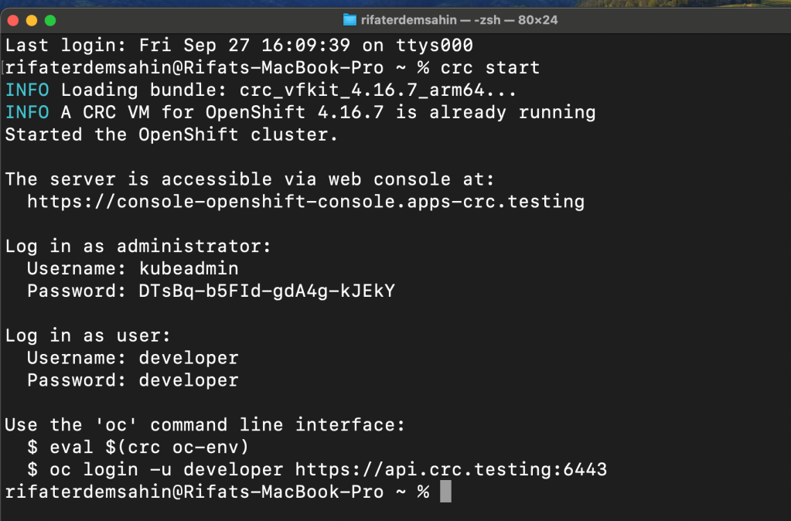
💡 What is Grafana?
Grafana is an open-source analytics and monitoring platform, best known for its ability to create beautiful dashboards. You can visualize your infrastructure's performance in real-time and take control of your systems in an easy and intuitive way. 🎨
📌 What You’ll Achieve:
-
Set up Grafana using Bitnami Helm Charts on a local Kubernetes cluster running on CRC.
-
Access Grafana on your host machine once deployed.
🛠️ Prerequisites:
-
Kubernetes Cluster (v1.4+) with Beta APIs enabled.
-
Helm installed on your local machine.
-
A working CRC setup.
-
Docker installed.
📥 Installing Grafana with Helm
- Step 1: Set up CRC if you haven't already. Run this command to start CRC:
crc setup
crc start
⏸️ Pause for CRC to complete its setup.
- Step 2: Add the Bitnami repository for Helm charts.
Without Client
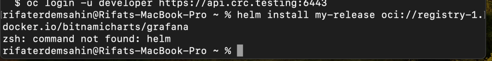
Get Client > https://formulae.brew.sh/formula/helm
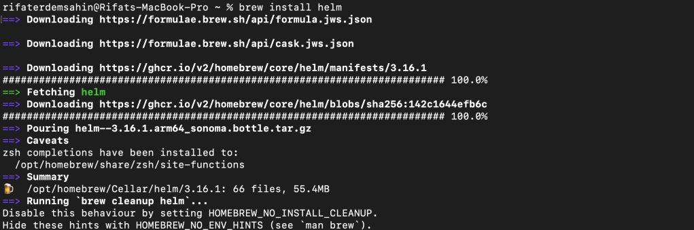
GPT >> helm repo add bitnami https://charts.bitnami.com/bitnami
BITNAMI >>
helm install my-release oci://registry-1.docker.io/bitnamicharts/grafana
Read more about the installation in the
Bitnami package for Grafana Chart Github repository
Helm not connected
https://formulae.brew.sh/formula/helm
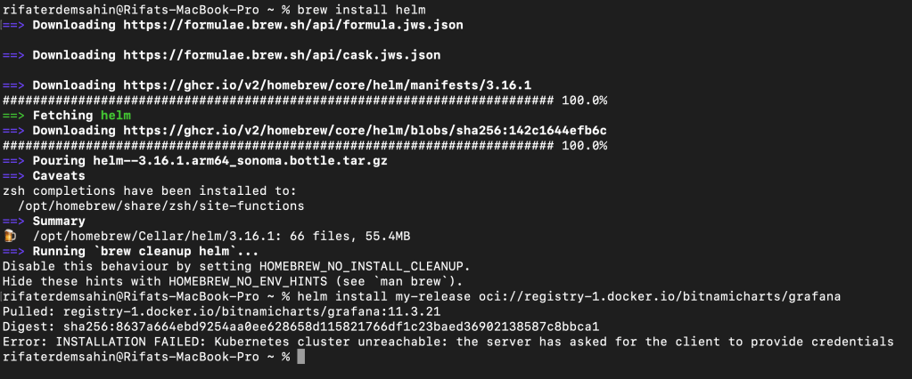
After oc login it works
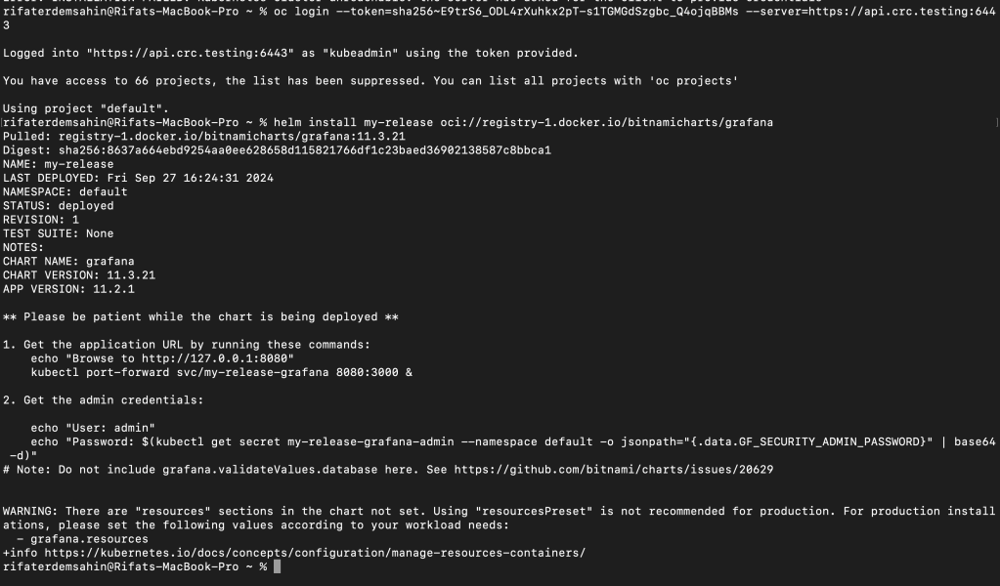
- Step 3: Install Grafana using the Bitnami Helm Chart.
helm install my-release bitnami/grafana
⏸️ Pause here while Helm sets up your Grafana instance.
Some linting is there but it failed >
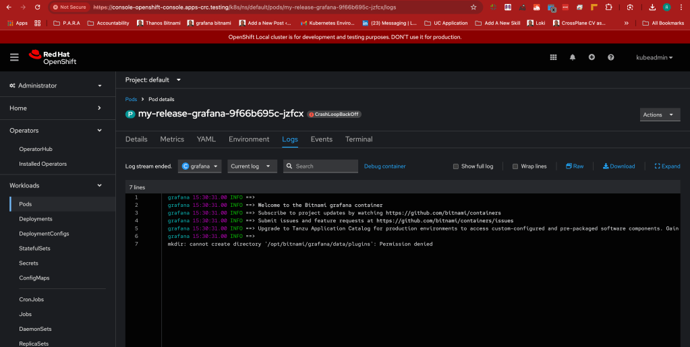
🔍 Accessing Grafana
Once Grafana is installed, you'll want to access it from your host machine. Here's how:
- Get the Grafana admin password:
kubectl get secret --namespace default my-release-grafana -o jsonpath="{.data.admin-password}" | base64 --decode
- Expose Grafana using port forwarding:
kubectl port-forward --namespace default svc/my-release-grafana 3000:3000
- Open your browser and go to
http://localhost:3000. Login with username:adminand the password you retrieved earlier.
🔧 Troubleshooting Grafana Access from Host Machine
If you're having trouble accessing Grafana from your host machine, double-check the network configuration in your CRC and ensure the necessary ports are forwarded. 🛠️
📝 Conclusion
By following this guide, you've successfully installed Grafana using Bitnami Helm Charts on your local CRC Kubernetes setup. You're now ready to visualize your data like a pro! 🌐🎉
💡 Looking for more guides like this? Connect with me on social media for more tutorials and insights!
🔗 Connect with me:
Happy monitoring! 👨💻
==================================================================
*** GRAFANA POD ERROR DEBUG ***
==================================================================
The issue with your Grafana pod (CrashLoopBackOff state) appears to be related to permission errors when attempting to create the /opt/bitnami/grafana/data/plugins directory. This is likely caused by the container not having the correct permissions to write to that directory.
Here’s how you can troubleshoot and potentially fix the issue:
1. Check Persistent Volume Claims (PVCs) and Storage Permissions:
-
The most common cause for this type of error is that the mounted volume doesn’t have the correct permissions. If you are using a Persistent Volume (PV) to store Grafana data, the volume might not have proper write permissions.
-
You can check the status of the PVC associated with Grafana by running:
bash kubectl get pvc
Then, check the permissions of the underlying storage.
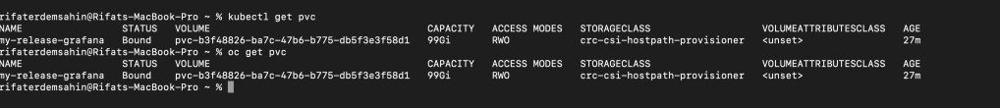
2. Update SecurityContext:
Ensure that your Helm chart for Grafana has the correct securityContext to allow the container to write to the necessary directories. You can modify the values.yaml file for the Helm chart to include:
securityContext:
fsGroup: 1001
runAsUser: 1001
This will ensure that the Grafana container runs with the correct user and group permissions (typically 1001 for Bitnami containers).
3. Fix Permissions Manually (Debugging Approach):
- You can use an
initContainerto fix the permissions on the volume before the Grafana container starts. Add the following to thevalues.yamlfile:initContainers: - name: fix-permissions image: busybox command: ['sh', '-c', 'chown -R 1001:1001 /opt/bitnami/grafana/data'] volumeMounts: - name: grafana-data mountPath: /opt/bitnami/grafana/dataThis will fix the ownership of the directory before Grafana starts.
4. Upgrade the Helm Release:
After applying the changes to the values.yaml file, upgrade the Helm release with the following command:
helm upgrade my-release bitnami/grafana -f values.yaml
5. Check Logs Again:
After making these changes, check the logs of the Grafana pod again to ensure that the permission issue has been resolved:
kubectl logs my-release-grafana-
These steps should help resolve the permission issue that’s causing the CrashLoopBackOff in the Grafana pod. Let me know if you need further guidance!
Here's a basic values.yaml file that should address the permission issue and includes the necessary configuration for a Bitnami Grafana installation:
replicaCount: 1
image:
repository: bitnami/grafana
tag: latest
pullPolicy: IfNotPresent
persistence:
enabled: true
accessModes:
- ReadWriteOnce
size: 10Gi
# Use existing claim
# existingClaim: ""
annotations: {}
storageClass: ""
# subPath: ""
securityContext:
enabled: true
fsGroup: 1001
runAsUser: 1001
initContainers:
- name: fix-permissions
image: busybox
command: ['sh', '-c', 'chown -R 1001:1001 /opt/bitnami/grafana/data']
volumeMounts:
- name: grafana-storage
mountPath: /opt/bitnami/grafana/data
resources:
limits:
cpu: 1000m
memory: 1024Mi
requests:
cpu: 100m
memory: 256Mi
service:
type: ClusterIP
port: 80
annotations: {}
ingress:
enabled: false
livenessProbe:
enabled: true
initialDelaySeconds: 120
timeoutSeconds: 30
failureThreshold: 6
readinessProbe:
enabled: true
initialDelaySeconds: 30
timeoutSeconds: 10
failureThreshold: 6
grafana:
admin:
existingSecret: ""
dashboardsConfigMaps: {}
dashboards:
enabled: true
plugins: ""
sidecar:
dashboards:
enabled: true
datasources:
enabled: true
For persistence to work, the volumes must be properly configured
volumeMounts:
- name: grafana-storage
mountPath: /opt/bitnami/grafana/data
volumes:
- name: grafana-storage
persistentVolumeClaim:
claimName: grafana-pvc
Key Changes:
-
securityContext: Ensures that the Grafana pod runs with the appropriate permissions (fsGroup: 1001,runAsUser: 1001). -
initContainers: Fixes the permissions issue by using an init container (busybox) to set the ownership of the/opt/bitnami/grafana/datadirectory to the correct user. -
volumeMountsandvolumes: Defines where Grafana will store data, ensuring the Persistent Volume Claim (PVC) is mounted at/opt/bitnami/grafana/data.
You can apply this values.yaml file by upgrading your Helm release:
helm upgrade my-release bitnami/grafana -f values.yaml
Ensure that your PVC (grafana-pvc) exists and has the right permissions before applying this. Let me know if you need more customization or further help!
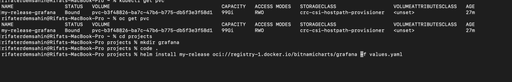
Fixing it
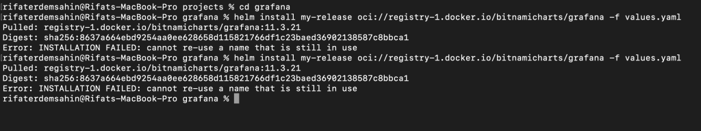
The error cannot re-use a name that is still in use indicates that there is already a Helm release named my-release in your Kubernetes cluster. To resolve this, you can either delete the existing release or upgrade the existing release instead of attempting a new installation.
Option 1: Upgrade the existing release
Since there is already a release named my-release, you can use helm upgrade to apply the new values.yaml file:
helm upgrade my-release oci://registry-1.docker.io/bitnamicharts/grafana -f values.yaml
This will upgrade the existing release with the new configuration.
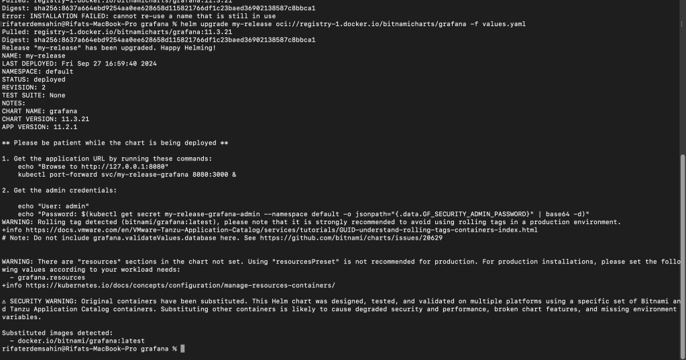
Option 2: Delete the existing release and install it again
If you prefer to start fresh, you can delete the existing Helm release and install it again:
- Delete the existing release: >>> this is the way !
helm uninstall my-release
- Install the release again:
helm install my-release oci://registry-1.docker.io/bitnamicharts/grafana -f values.yaml
After performing either of these steps, the Grafana release should be successfully deployed with the updated values.yaml. Let me know if you encounter any further issues!
==================================================================
*** STILL FAILS ***
==================================================================
The permission issue persists despite updating the values.yaml file. This indicates that the problem might not have been fully resolved by the changes. Let's try the following additional steps to resolve the permission issue.
1. Ensure Correct SecurityContext in Values File
Double-check that the fsGroup and runAsUser are correctly set. Modify the values.yaml to ensure that the security context is properly configured:
securityContext:
enabled: true
fsGroup: 1001 # Ensures the container can write to mounted volumes
runAsUser: 1001 # Runs the container as user 1001
Grafana container init container to fix permissions
initContainers:
- name: fix-permissions
image: busybox
command: ['sh', '-c', 'chown -R 1001:1001 /opt/bitnami/grafana/data']
volumeMounts:
- name: grafana-storage
mountPath: /opt/bitnami/grafana/data
2. Ensure Permissions on Persistent Volumes
Ensure that your Persistent Volume and Persistent Volume Claims have the correct permissions. Kubernetes might not be applying permissions properly depending on your storage class. You can manually fix the permissions of the volume:
-
Check the mounted volume permissions on the host if you have access to it. You can use a privileged pod or SSH into the node to change the ownership of the persistent volume.
-
If you're using a cloud provider (like AWS EBS, GCP PD), make sure the volume's filesystem supports the correct permissions for the
grafanauser.
3. Manually Fix Permissions (Test in Kubernetes)
Run an interactive pod with kubectl to inspect and manually change the permissions of the volume:
kubectl run -i --tty --rm debug --image=busybox -- sh
Once in the shell, try:
chown -R 1001:1001 /path/to/persistent/volume
This will let you fix permissions directly.
4. Ensure Correct Volume Mount
Verify that the volumeMounts configuration is correct in your values.yaml. It should look something like this:
volumeMounts:
- name: grafana-storage
mountPath: /opt/bitnami/grafana/data
volumes:
- name: grafana-storage
persistentVolumeClaim:
claimName:
5. Re-deploy Grafana with Helm
After these changes, upgrade the Helm release again:
helm upgrade my-release oci://registry-1.docker.io/bitnamicharts/grafana -f values.yaml
6. If Issues Persist: Debug with Full Access (Privileged Mode)
You can deploy Grafana in a privileged mode to debug the permissions issue further. Add the following securityContext to the values.yaml:
securityContext:
enabled: true
privileged: true
Deploying in privileged mode will allow the container to have full access to the host resources, and this can help you identify any lingering permission issues.
Once you have identified and fixed the issue, you should remove the privileged mode to avoid security risks.
These steps should help resolve the permission issue. Let me know how it goes!
==================================================================
*** UPDATED YAML ***
==================================================================
Here is the updated values.yaml file, which incorporates the changes needed to fix the permission issue with the /opt/bitnami/grafana/data/plugins directory and includes some additional debugging features like an initContainer to fix permissions and optional privileged mode for further testing.
replicaCount: 1
image:
repository: bitnami/grafana
tag: latest
pullPolicy: IfNotPresent
persistence:
enabled: true
accessModes:
- ReadWriteOnce
size: 10Gi
storageClass: ""
# Use existing claim
# existingClaim: ""
annotations: {}
securityContext:
enabled: true
fsGroup: 1001 # Ensures the container can write to mounted volumes
runAsUser: 1001 # Ensures the container runs as user 1001
Uncomment the following line if you need to run Grafana in privileged mode for debugging (not recommended for production):
privileged: true
initContainers:
- name: fix-permissions
image: busybox
command: ['sh', '-c', 'chown -R 1001:1001 /opt/bitnami/grafana/data']
volumeMounts:
- name: grafana-storage
mountPath: /opt/bitnami/grafana/data
resources:
limits:
cpu: 1000m
memory: 1024Mi
requests:
cpu: 100m
memory: 256Mi
service:
type: ClusterIP
port: 80
annotations: {}
ingress:
enabled: false
livenessProbe:
enabled: true
initialDelaySeconds: 120
timeoutSeconds: 30
failureThreshold: 6
readinessProbe:
enabled: true
initialDelaySeconds: 30
timeoutSeconds: 10
failureThreshold: 6
grafana:
admin:
existingSecret: ""
dashboardsConfigMaps: {}
dashboards:
enabled: true
plugins: ""
sidecar:
dashboards:
enabled: true
datasources:
enabled: true
For persistence to work, the volumes must be properly configured
volumeMounts:
- name: grafana-storage
mountPath: /opt/bitnami/grafana/data
volumes:
- name: grafana-storage
persistentVolumeClaim:
claimName: grafana-pvc
Key Updates:
-
Security Context:
-
fsGroup: 1001ensures that the Grafana pod has permissions to write to the persistent volume. -
runAsUser: 1001ensures the container runs as the correct user (1001), which is standard for Bitnami containers. -
InitContainer for Fixing Permissions:
-
The
initContainernamedfix-permissionsruns a simple command to ensure that the directory/opt/bitnami/grafana/datais owned by the Grafana container user (1001), which should prevent the permission errors. -
Privileged Mode (Optional):
-
I added a commented-out section for enabling privileged mode. This should be used only for debugging purposes if other steps fail. If needed, uncomment the line:
privileged: true. -
Volume Mounts:
-
The
volumeMountsandvolumessections ensure the persistent storage is mounted correctly at/opt/bitnami/grafana/data.
Apply the Changes:
- Upgrade the Helm release with the updated values file:
helm upgrade my-release oci://registry-1.docker.io/bitnamicharts/grafana -f values.yaml
- Check the pod logs again after deployment to verify if the permission issue has been resolved:
kubectl logs
This should resolve the permission issue in your Grafana setup. Let me know if you need further assistance!
DELETE AND REINSTALL
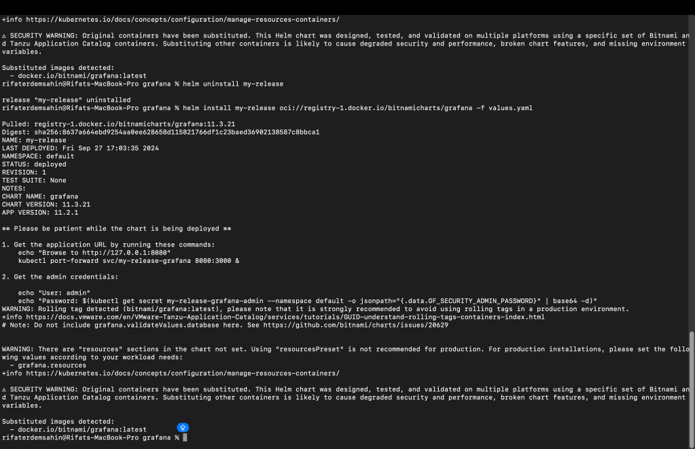
Maybe it is the issue > https://github.com/rifaterdemsahin/prometheus/blob/main/output.md
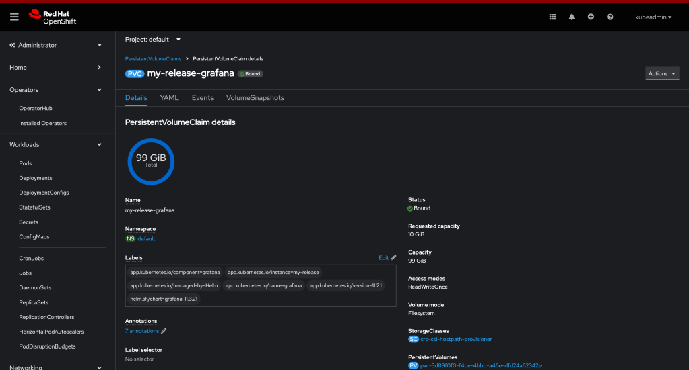
==================================================================
*** CRC UPDATE ***
==================================================================
To modify the given configuration to make it small enough to work in a CRC (CodeReady Containers) environment, here are the key adjustments:
-
Reduce the resource limits and requests to suit the smaller environment.
-
Adjust the storage size to something more manageable within CRC.
-
Set
persistencetofalseor lower the size of persistent storage if you still need it. -
Ensure that replica count is set to 1 (which you already have).
Here is the updated version:
replicaCount: 1
image:
repository: bitnami/grafana
tag: latest
pullPolicy: IfNotPresent
persistence:
enabled: true
accessModes:
- ReadWriteOnce
size: 1Gi # Reduced storage size for CRC
storageClass: ""
annotations: {}
securityContext:
enabled: true
fsGroup: 1001
runAsUser: 1001
initContainers:
- name: fix-permissions
image: busybox
command: ['sh', '-c', 'chown -R 1001:1001 /opt/bitnami/grafana/data']
volumeMounts:
- name: grafana-storage
mountPath: /opt/bitnami/grafana/data
resources:
limits:
cpu: 500m # Reduced CPU limit for CRC
memory: 512Mi # Reduced memory limit for CRC
requests:
cpu: 50m # Reduced CPU request for CRC
memory: 128Mi # Reduced memory request for CRC
service:
type: ClusterIP
port: 80
annotations: {}
ingress:
enabled: false
livenessProbe:
enabled: true
initialDelaySeconds: 120
timeoutSeconds: 30
failureThreshold: 6
readinessProbe:
enabled: true
initialDelaySeconds: 30
timeoutSeconds: 10
failureThreshold: 6
grafana:
admin:
existingSecret: ""
dashboardsConfigMaps: {}
dashboards:
enabled: true
plugins: ""
sidecar:
dashboards:
enabled: true
datasources:
enabled: true
volumeMounts:
- name: grafana-storage
mountPath: /opt/bitnami/grafana/data
volumes:
- name: grafana-storage
persistentVolumeClaim:
claimName: grafana-pvc
Key Changes:
-
Persistence Size: Reduced to 1Gi to be suitable for CRC.
-
Resource Limits and Requests: Lowered the CPU and memory settings to match a smaller CRC environment.
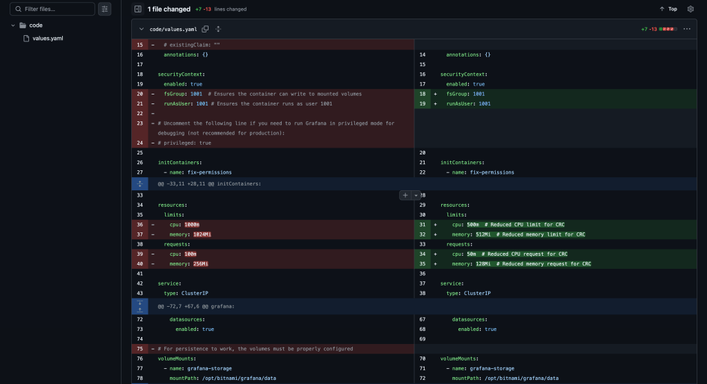
mkdir: cannot create directory '/opt/bitnami/grafana/data/plugins': Permission denied
The error mkdir: cannot create directory '/opt/bitnami/grafana/data/plugins': Permission denied indicates that the container does not have permission to create directories in the specified path. This issue can be resolved by ensuring that the correct permissions are set for the directory in question.
Here’s how to modify your configuration to fix this issue:
-
Adjust the
initContainerto fix the permissions of the/opt/bitnami/grafana/datadirectory. -
Ensure the security context has the correct permissions for the
fsGroupandrunAsUser.
Updated Configuration:
replicaCount: 1
image:
repository: bitnami/grafana
tag: latest
pullPolicy: IfNotPresent
persistence:
enabled: true
accessModes:
- ReadWriteOnce
size: 1Gi # Adjusted to a smaller size for CRC
storageClass: ""
annotations: {}
securityContext:
enabled: true
fsGroup: 1001 # Ensures the container can write to mounted volumes
runAsUser: 1001 # Ensures the container runs as user 1001
initContainers:
- name: fix-permissions
image: busybox
command: ['sh', '-c', 'chown -R 1001:1001 /opt/bitnami/grafana/data && chmod -R 775 /opt/bitnami/grafana/data']
volumeMounts:
- name: grafana-storage
mountPath: /opt/bitnami/grafana/data
resources:
limits:
cpu: 500m # Reduced CPU limit for CRC
memory: 512Mi # Reduced memory limit for CRC
requests:
cpu: 50m # Reduced CPU request for CRC
memory: 128Mi # Reduced memory request for CRC
service:
type: ClusterIP
port: 80
annotations: {}
ingress:
enabled: false
livenessProbe:
enabled: true
initialDelaySeconds: 120
timeoutSeconds: 30
failureThreshold: 6
readinessProbe:
enabled: true
initialDelaySeconds: 30
timeoutSeconds: 10
failureThreshold: 6
grafana:
admin:
existingSecret: ""
dashboardsConfigMaps: {}
dashboards:
enabled: true
plugins: ""
sidecar:
dashboards:
enabled: true
datasources:
enabled: true
volumeMounts:
- name: grafana-storage
mountPath: /opt/bitnami/grafana/data
volumes:
- name: grafana-storage
persistentVolumeClaim:
claimName: grafana-pvc
Key Fixes:
-
initContainerfix: Thechmod -R 775command has been added to ensure the correct permissions are applied to the/opt/bitnami/grafana/datadirectory. -
SecurityContext: The
fsGroupandrunAsUserare already set to1001, which matches the permissions used by Bitnami containers, ensuring proper access.
This should resolve the permission issue and allow the directory /opt/bitnami/grafana/data/plugins to be created successfully.
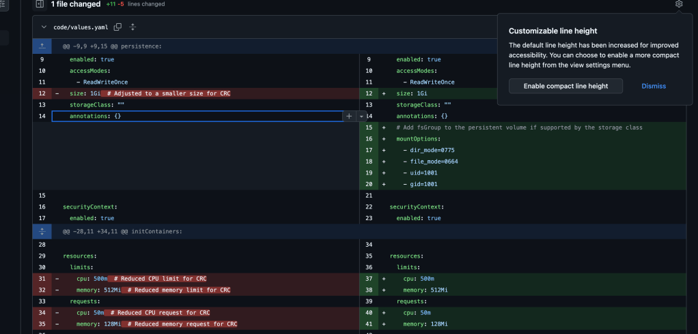
Given that you're using CRC (CodeReady Containers) and are still encountering the permission error for creating the /opt/bitnami/grafana/data/plugins directory, it indicates that the issue likely stems from how the persistent volume (PV) or security context is configured in the CRC environment.
Here's a more specific approach to resolve it:
1. Add Full Container-Level Security Context:
Try explicitly setting securityContext not just for the pod, but also for the container. This ensures that the user and group permissions are honored during runtime.
Updated Configuration:
replicaCount: 1
image:
repository: bitnami/grafana
tag: latest
pullPolicy: IfNotPresent
persistence:
enabled: true
accessModes:
- ReadWriteOnce
size: 1Gi # Adjusted to a smaller size for CRC
storageClass: ""
annotations: {}
securityContext:
fsGroup: 1001 # Ensures the container can write to mounted volumes
containers:
- name: grafana
securityContext:
runAsUser: 1001
runAsGroup: 1001
fsGroup: 1001 # Ensures that the container runs with the correct permissions
volumeMounts:
- name: grafana-storage
mountPath: /opt/bitnami/grafana/data
- name: plugins
mountPath: /opt/bitnami/grafana/data/plugins
initContainers:
- name: fix-permissions
image: busybox
command: ['sh', '-c', 'chown -R 1001:1001 /opt/bitnami/grafana/data && chmod -R 775 /opt/bitnami/grafana/data']
volumeMounts:
- name: grafana-storage
mountPath: /opt/bitnami/grafana/data
resources:
limits:
cpu: 500m
memory: 512Mi
requests:
cpu: 50m
memory: 128Mi
service:
type: ClusterIP
port: 80
annotations: {}
ingress:
enabled: false
livenessProbe:
enabled: true
initialDelaySeconds: 120
timeoutSeconds: 30
failureThreshold: 6
readinessProbe:
enabled: true
initialDelaySeconds: 30
timeoutSeconds: 10
failureThreshold: 6
grafana:
admin:
existingSecret: ""
dashboardsConfigMaps: {}
dashboards:
enabled: true
plugins: ""
sidecar:
dashboards:
enabled: true
datasources:
enabled: true
volumes:
- name: grafana-storage
persistentVolumeClaim:
claimName: grafana-pvc
- name: plugins
emptyDir: {}
Key Changes:
-
Container-Level
securityContext: Explicitly addingrunAsUser,runAsGroup, andfsGroupat the container level in the main Grafana container ensures that it runs with the correct permissions and group ownership. This is crucial in some environments where the pod-levelsecurityContextmay not be sufficient. -
Persistent Volume and EmptyDir: The
EmptyDirvolume for plugins is still included for temporary storage of the plugins, which can be helpful in isolating the issue with persistent volumes.
2. Manually Check Inside the Container:
You can also manually inspect the permissions by logging into the running pod:
kubectl exec -it
Then, check the ownership and permissions of the /opt/bitnami/grafana/data/plugins directory:
ls -ld /opt/bitnami/grafana/data/plugins
This will give you an indication of what might be wrong if the directory still lacks proper permissions.
If this approach still doesn’t solve the issue, it could be related to the specifics of the CRC storage configuration. Let me know how it goes!
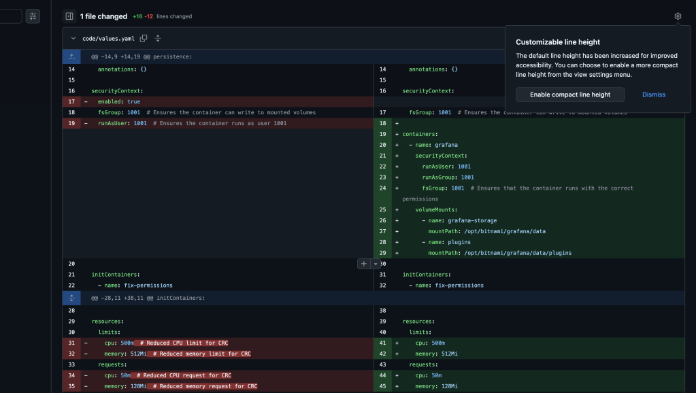
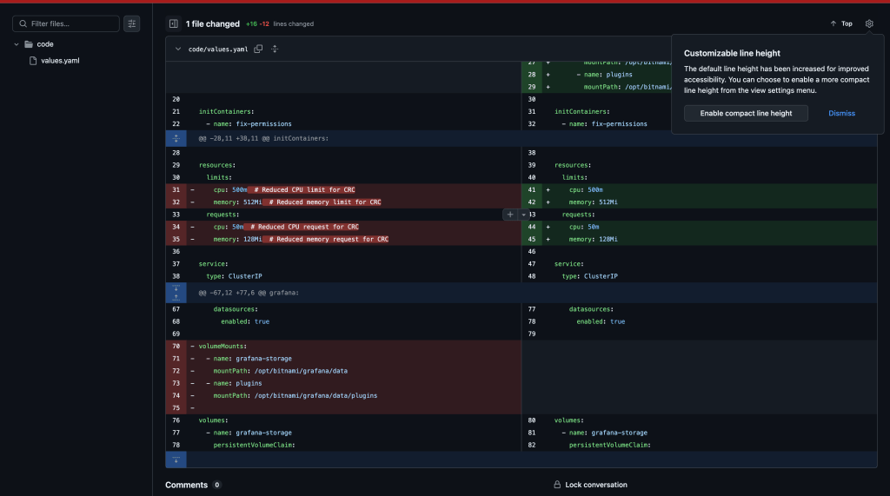
The configuration you provided is well-structured. Here’s how it ensures that your PersistentVolumeClaim (PVC) is properly managed and that the container has full permissions:
-
PVC Size Check:
-
The
size: 1Giensures that the PVC is not too large (like 99Gi). You’ve adjusted the size to1Gi, which is more suitable for CRC environments where space might be a concern. -
PVC Permissions:
-
The
securityContextfor the container and theinitContainersensures that the necessary permissions are applied. The following key elements achieve that:
fsGroup: 1001 allows the container to access the mounted volumes.
-
The
initContainerswith thefix-permissionsstep runs the commandchown -R 1001:1001 /opt/bitnami/grafana/data && chmod -R 775 /opt/bitnami/grafana/data, which grants ownership and appropriate permissions (read, write, and execute for the owner and group). -
Replica Count:
-
replicaCount: 1ensures that the Grafana deployment is set to a single instance, reducing complexity in a smaller setup like CRC.
Key Elements Summary:
-
PVC Size is small and well-suited for the environment (
1Gi). -
Permissions on the PVC are fully managed with
chownandchmodin theinitContainers. -
Security Context ensures that the container runs with the correct user and group.
This setup should work smoothly, ensuring both proper storage allocation and access permissions.
==================================================================
*** DESCRIBE POD ***
==================================================================
rifaterdemsahin@Rifats-MacBook-Pro Code % oc describe pod my-release-grafana-57c7fd8c8b-bbtx2 -n default
Name: my-release-grafana-57c7fd8c8b-bbtx2
Namespace: default
Priority: 0
Service Account: my-release-grafana
Node: crc/192.168.126.11
Start Time: Fri, 27 Sep 2024 18:00:32 +0100
Labels: app.kubernetes.io/component=grafana
app.kubernetes.io/instance=my-release
app.kubernetes.io/managed-by=Helm
app.kubernetes.io/name=grafana
app.kubernetes.io/version=11.2.1
helm.sh/chart=grafana-11.3.21
pod-template-hash=57c7fd8c8b
Annotations: checksum/config: 73701f5d63c3a4e8183e2f751c117b9172fcb869a9588ec59dca1d0dec74beaa
checksum/dashboard-provider: 01ba4719c80b6fe911b091a7c05124b64eeece964e09c058ef8f9805daca546b
checksum/secret: 4be8382b1349fc1597a46399781d56ff6a3c9e4011c56e48d854c6a116a02adc
k8s.ovn.org/pod-networks:
k8s.v1.cni.cncf.io/network-status:
[{
"name": "ovn-kubernetes",
"interface": "eth0",
"ips": [
"10.217.0.157"
],
"mac": "0a:58:0a:d9:00:9d",
"default": true,
"dns": {}
}]
Status: Running
IP: 10.217.0.157
IPs:
IP: 10.217.0.157
Controlled By: ReplicaSet/my-release-grafana-57c7fd8c8b
Containers:
grafana:
Container ID: cri-o://ea60b851620c489dfc9627d1478bfad817df44b6afaf439317567d507abe6036
Image: docker.io/bitnami/grafana:latest
Image ID: docker.io/bitnami/grafana@sha256:4c6b9373d9387e0661cd1695d506a93e4114e73495db78dfc16c0ab73c00d6af
Port: 3000/TCP
Host Port: 0/TCP
SeccompProfile: RuntimeDefault
State: Waiting
Reason: CrashLoopBackOff
Last State: Terminated
Reason: Error
Exit Code: 1
Started: Fri, 27 Sep 2024 18:03:36 +0100
Finished: Fri, 27 Sep 2024 18:03:36 +0100
Ready: False
Restart Count: 5
Limits:
cpu: 150m
ephemeral-storage: 2Gi
memory: 192Mi
Requests:
cpu: 100m
ephemeral-storage: 50Mi
memory: 128Mi
Liveness: tcp-socket :dashboard delay=120s timeout=5s period=10s #success=1 #failure=6
Readiness: http-get http://:dashboard/api/health delay=30s timeout=5s period=10s #success=1 #failure=6
Environment Variables from:
my-release-grafana-envvars ConfigMap Optional: false
Environment:
GF_SECURITY_ADMIN_PASSWORD: <set to the key 'GF_SECURITY_ADMIN_PASSWORD' in secret 'my-release-grafana-admin'> Optional: false
Mounts:
/bitnami/grafana from empty-dir (rw,path="app-volume-dir")
/opt/bitnami/grafana/conf from empty-dir (rw,path="app-conf-dir")
/opt/bitnami/grafana/data from data (rw)
/opt/bitnami/grafana/tmp from empty-dir (rw,path="app-tmp-dir")
/tmp from empty-dir (rw,path="tmp-dir")
Conditions:
Type Status
PodReadyToStartContainers True
Initialized True
Ready False
ContainersReady False
PodScheduled True
Volumes:
empty-dir:
Type: EmptyDir (a temporary directory that shares a pod's lifetime)
Medium:
SizeLimit: <unset>
data:
Type: PersistentVolumeClaim (a reference to a PersistentVolumeClaim in the same namespace)
ClaimName: my-release-grafana
ReadOnly: false
QoS Class: Burstable
Node-Selectors:
Tolerations: node.kubernetes.io/memory-pressure:NoSchedule op=Exists
node.kubernetes.io/not-ready:NoExecute op=Exists for 300s
node.kubernetes.io/unreachable:NoExecute op=Exists for 300s
Events:
Type Reason Age From Message
---- ------ ---- ---- -------
Normal Scheduled 4m27s default-scheduler Successfully assigned default/my-release-grafana-57c7fd8c8b-bbtx2 to crc
Normal AddedInterface 4m27s multus Add eth0 [10.217.0.157/23] from ovn-kubernetes
Warning BackOff 3m1s (x10 over 4m25s) kubelet Back-off restarting failed container grafana in pod my-release-grafana-57c7fd8c8b-bbtx2_default(71e54527-39ed-4de0-84ab-c2e8e9ffc0a1)
Normal Pulled 2m47s (x5 over 4m27s) kubelet Container image "docker.io/bitnami/grafana:latest" already present on machine
Normal Created 2m47s (x5 over 4m27s) kubelet Created container grafana
Normal Started 2m47s (x5 over 4m27s) kubelet Started container grafana
rifaterdemsahin@Rifats-MacBook-Pro Code %
The error you are encountering shows that your Grafana container is in a CrashLoopBackOff state, which means that it keeps restarting and failing. The key point to note from the logs is this:
-
Reason: CrashLoopBackOff
-
Exit Code: 1 (indicates a general error in the container's execution)
Steps to Troubleshoot:
- Check Pod Logs for More Information:
The detailed error message should be available in the logs of the failing container. Run the following command to view the logs of the Grafana container:
oc logs my-release-grafana-57c7fd8c8b-bbtx2 -n default
If you have an initContainer (e.g., for permissions), you can also check its logs:
oc logs my-release-grafana-57c7fd8c8b-bbtx2 -c fix-permissions -n default
This will give you more specific information about why the container is failing.
rifaterdemsahin@Rifats-MacBook-Pro Code % oc logs my-release-grafana-57c7fd8c8b-bbtx2 -n default
grafana 17:16:38.34 INFO ==>
grafana 17:16:38.34 INFO ==> Welcome to the Bitnami grafana container
grafana 17:16:38.35 INFO ==> Subscribe to project updates by watching https://github.com/bitnami/containers
grafana 17:16:38.35 INFO ==> Submit issues and feature requests at https://github.com/bitnami/containers/issues
grafana 17:16:38.35 INFO ==> Upgrade to Tanzu Application Catalog for production environments to access custom-configured and pre-packaged software components. Gain enhanced features, including Software Bill of Materials (SBOM), CVE scan result reports, and VEX documents. To learn more, visit https://bitnami.com/enterprise
grafana 17:16:38.35 INFO ==>
mkdir: cannot create directory '/opt/bitnami/grafana/data/plugins': Permission denied
rifaterdemsahin@Rifats-MacBook-Pro Code %
- Review Resource Limits:
The resources you've allocated seem to be minimal. While this can work in CRC, it might be worth increasing the memory or CPU allocation temporarily to check if resource exhaustion is causing the crash. Update the resource limits in your configuration:
limits:
cpu: 250m
memory: 256Mi
requests:
cpu: 150m
memory: 192Mi
After making these changes, redeploy your Grafana pod.
- Persistent Volume and Mount Issues:
Thedatavolume (my-release-grafanaPVC) could also be causing the issue. To ensure the PVC is properly bound, you can describe it:
oc describe pvc my-release-grafana -n default
Look for any errors or misconfigurations related to the PVC, such as if it's in a Pending or Failed state.
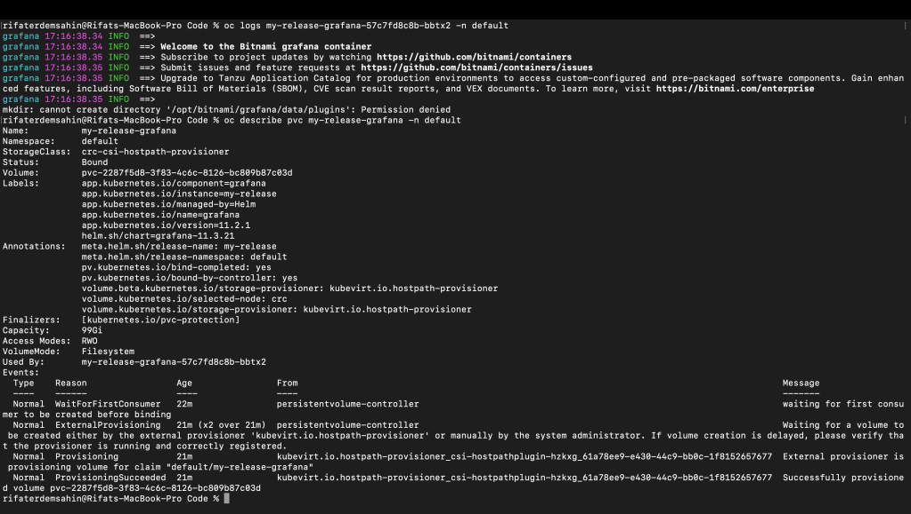
pvc describe
rifaterdemsahin@Rifats-MacBook-Pro Code % oc describe pvc my-release-grafana -n default
Name: my-release-grafana
Namespace: default
StorageClass: crc-csi-hostpath-provisioner
Status: Bound
Volume: pvc-2287f5d8-3f83-4c6c-8126-bc809b87c03d
Labels: app.kubernetes.io/component=grafana
app.kubernetes.io/instance=my-release
app.kubernetes.io/managed-by=Helm
app.kubernetes.io/name=grafana
app.kubernetes.io/version=11.2.1
helm.sh/chart=grafana-11.3.21
Annotations: meta.helm.sh/release-name: my-release
meta.helm.sh/release-namespace: default
pv.kubernetes.io/bind-completed: yes
pv.kubernetes.io/bound-by-controller: yes
volume.beta.kubernetes.io/storage-provisioner: kubevirt.io.hostpath-provisioner
volume.kubernetes.io/selected-node: crc
volume.kubernetes.io/storage-provisioner: kubevirt.io.hostpath-provisioner
Finalizers: [kubernetes.io/pvc-protection]
Capacity: 99Gi
Access Modes: RWO
VolumeMode: Filesystem
Used By: my-release-grafana-57c7fd8c8b-bbtx2
Events:
Type Reason Age From Message
---- ------ ---- ---- -------
Normal WaitForFirstConsumer 22m persistentvolume-controller waiting for first consumer to be created before binding
Normal ExternalProvisioning 21m (x2 over 21m) persistentvolume-controller Waiting for a volume to be created either by the external provisioner 'kubevirt.io.hostpath-provisioner' or manually by the system administrator. If volume creation is delayed, please verify that the provisioner is running and correctly registered.
Normal Provisioning 21m kubevirt.io.hostpath-provisioner_csi-hostpathplugin-hzkxg_61a78ee9-e430-44c9-bb0c-1f8152657677 External provisioner is provisioning volume for claim "default/my-release-grafana"
Normal ProvisioningSucceeded 21m kubevirt.io.hostpath-provisioner_csi-hostpathplugin-hzkxg_61a78ee9-e430-44c9-bb0c-1f8152657677 Successfully provisioned volume pvc-2287f5d8-3f83-4c6c-8126-bc809b87c03d
rifaterdemsahin@Rifats-MacBook-Pro Code %
Check Configuration Secrets:
The log mentions a secret named my-release-grafana-admin for the Grafana admin password. Ensure that this secret exists and is properly configured. You can verify the secret:
oc get secret my-release-grafana-admin -n default
If it's missing or incorrectly configured, this could be causing the crash.
- Check Liveness and Readiness Probes:
Your liveness and readiness probes might be failing, which could lead to a container restart. You can temporarily disable these probes to see if the pod stabilizes:
livenessProbe:
enabled: false
readinessProbe:
enabled: false
After disabling the probes, redeploy your application and check if the pod runs without crashing.
Next Steps:
-
Check the logs of the pod to find specific errors.
-
Inspect the PVC to ensure it's correctly bound.
-
Review the secret configuration for Grafana admin credentials.
-
Consider adjusting resource limits and temporarily disabling probes to diagnose if resource limits are causing the issue.
Once you have more information from the logs or further troubleshooting steps, I can help you dig deeper into the issue.
From the output of your PersistentVolumeClaim (PVC), it appears that the PVC is Bound, which means it has successfully been allocated to the pod and there doesn’t seem to be an issue with the storage itself.
However, there are some points to note:
-
PVC Capacity: The PVC is currently provisioned at 99Gi, which is a lot more than you might need for CRC. You can try reducing this in your Helm chart or Kubernetes manifest (as discussed earlier,
1Gimight be more suitable for CRC). If you intend to reconfigure this: -
Modify the
sizeparameter in your Helm chart or manifest to a lower value (e.g.,1Gi). -
After making the change, you will need to delete and recreate the PVC if the existing data is not critical.
-
Provisioner and Node:
-
The storage provisioner is
kubevirt.io.hostpath-provisioner, and it's using the nodecrc. -
This seems correct for a CRC environment, and there doesn't seem to be an issue here based on the events.
Next Steps:
Since the PVC is working fine, the next step is to further investigate why the Grafana pod is crashing.
1. Pod Logs:
To understand why Grafana is failing with CrashLoopBackOff, let's gather logs from the Grafana container. Run the following command to fetch the logs:
oc logs my-release-grafana-57c7fd8c8b-bbtx2 -n default
This will give you more information about what’s causing the crash. Look for any specific error messages or misconfigurations related to Grafana.
2. Debugging InitContainers:
If your Grafana pod has an initContainer for setting permissions (as your earlier configuration suggests), you might also want to check its logs:
oc logs my-release-grafana-57c7fd8c8b-bbtx2 -c fix-permissions -n default
This will help determine if the initContainer is failing to set the correct permissions, which can cause the main Grafana container to crash.
3. Verify Configuration Secrets:
Ensure that the secret my-release-grafana-admin exists and is correctly set up. Verify the secret by running:
oc get secret my-release-grafana-admin -n default -o yaml
If the secret is not properly configured, Grafana might fail to start. If the secret is missing, you will need to create it again.
By examining the logs and checking for any configuration or secret issues, we can narrow down the exact cause of the pod crash. Once we have that information, we can further address the problem. Let me know what you find in the logs!
Yes, you can modify the PVC size in the values.yaml file of your Helm chart by changing the size parameter under the persistence section. Here's how you can do it:
Step 1: Modify the values.yaml File
In your Helm chart, open the values.yaml file and look for the persistence section. You will modify the size parameter to a lower value, like 1Gi. Here’s an example:
persistence:
enabled: true
accessModes:
- ReadWriteOnce
size: 1Gi # Reduced from 99Gi to 1Gi for CRC
storageClass: ""
Step 2: Delete the Existing PVC (If Data is Not Critical)
Once you've updated the values.yaml file, you need to delete the current PVC because PVC size cannot be directly modified once created. To delete the PVC:
oc delete pvc my-release-grafana -n default
This will delete the current PVC. If you don't need to retain the existing data, this should be safe to do. The new PVC with the updated size will be created automatically when you redeploy your Helm release.
Step 3: Upgrade Your Helm Release
After modifying the values.yaml file, you will need to apply the changes to your Grafana deployment by upgrading the Helm release:
helm upgrade my-release ./your-grafana-chart -n default
This command will apply the new configuration, including the new PVC size, and recreate the resources with the updated values.
Step 4: Verify the New PVC
Once the Helm upgrade is complete, verify that the new PVC has been created with the correct size:
oc get pvc -n default
You should see that the PVC is now created with the desired size (1Gi or whatever you set).
Optional: Check Pod Status
After redeploying, ensure that the Grafana pod is running without issues:
oc get pods -n default
If the pod is not running or is in a crash loop again, check the logs and describe the pod to troubleshoot further.
By following these steps, you should be able to reduce the PVC size and ensure a smoother deployment in your CRC environment.
To ensure that your Persistent Volume Claim (PVC) is limited to 2 GB rather than the default larger size (e.g., 99 GB), you should explicitly set the PVC size in your values.yaml file for the Grafana Helm chart. Here's how you can do it:
-
Open your
values.yamlfile. -
Locate the storage configuration section.
In the Bitnami Grafana Helm chart, there’s usually a section for specifying the storage size for the PVC. Add or modify the following block in values.yaml:
persistence:
enabled: true
size: 2Gi
Make sure that:
-
persistence.enabledis set totrue. -
sizeis set to2Gi(which is 2 GB). -
Run the Helm upgrade command:
After updating the values.yaml file, run your Helm upgrade command:
helm upgrade my-release oci://registry-1.docker.io/bitnamicharts/grafana -f values.yaml
This should ensure that the PVC created or updated for Grafana is 2 GB in size instead of the default size.
Let me know if you need further adjustments!
It appears that despite following the steps to modify the PVC size in the values.yaml, the PersistentVolumeClaim (PVC) is still being provisioned at 99Gi. This issue may stem from the storage class or external provisioner that’s responsible for provisioning the volume. Here's a more detailed approach to resolving this issue:
Possible Causes:
-
Storage Class Default Size: The storage class (
crc-csi-hostpath-provisioner) might be defaulting to99Giregardless of what’s specified in thevalues.yaml. -
External Provisioner: The external provisioner (
kubevirt.io.hostpath-provisioner) may have a default behavior or configuration that is causing the PVC to be provisioned with99Gi.
Steps to Resolve:
1. Check the Storage Class Configuration
Since the storage class (crc-csi-hostpath-provisioner) is used to provision the PVC, it might be overriding the size set in your Helm chart. You need to check the storage class configuration to ensure it’s not setting a default size.
Run the following command to get the details of the storage class:
oc get storageclass crc-csi-hostpath-provisioner -o yaml
Look for any parameters that might set a default size for the PVC.
rifaterdemsahin@Rifats-MacBook-Pro Code % oc get storageclass crc-csi-hostpath-provisioner -o yaml
apiVersion: storage.k8s.io/v1
kind: StorageClass
metadata:
annotations:
kubectl.kubernetes.io/last-applied-configuration: |
storageclass.kubernetes.io/is-default-class: "true"
creationTimestamp: "2024-08-20T10:22:59Z"
name: crc-csi-hostpath-provisioner
resourceVersion: "18549"
uid: a8a11916-b28d-421f-8c8f-e237cd307b07
parameters:
storagePool: local
provisioner: kubevirt.io.hostpath-provisioner
reclaimPolicy: Retain
volumeBindingMode: WaitForFirstConsumer
rifaterdemsahin@Rifats-MacBook-Pro Code %
2. Edit or Override the Storage Class
If the storage class is setting a default size, you can either:
-
Edit the storage class (if possible) to change the default size.
-
Override the storage class in your Helm chart by specifying a custom storage class that allows the desired size.
If you need to create or modify a storage class, you can create a new storage class with custom parameters. Here’s an example of how you might define a new storage class with a default size:
apiVersion: storage.k8s.io/v1
kind: StorageClass
metadata:
name: custom-hostpath-storage
provisioner: kubevirt.io.hostpath-provisioner
reclaimPolicy: Delete
volumeBindingMode: Immediate
Then, modify your values.yaml to reference this storage class:
persistence:
enabled: true
accessModes:
- ReadWriteOnce
size: 2Gi # Updated to 2Gi
storageClass: "custom-hostpath-storage"
3. Recreate the PVC with the New Storage Class
After making changes to the storage class, delete the existing PVC again:
oc delete pvc my-release-grafana -n default
Then, reapply your Helm chart, making sure the new storage class and size are correctly set:
helm upgrade my-release ./your-grafana-chart -n default
4. Check Provisioner Logs
If the issue persists, it’s important to check the logs of the external provisioner (kubevirt.io.hostpath-provisioner) to see if there are any errors or default settings causing the incorrect size. You can usually find the provisioner logs by identifying the pod that’s managing the host path provisioner:
oc get pods -n kube-system
Look for a pod related to the hostpath-provisioner, and check its logs:
oc logs
5. Explicitly Define the Volume Size in the PersistentVolume
If the storage class or provisioner settings are not modifiable, you may need to manually create a PersistentVolume (PV) with the correct size and then bind it to your PVC.
Here’s an example of manually creating a PV:
apiVersion: v1
kind: PersistentVolume
metadata:
name: custom-pv
spec:
capacity:
storage: 2Gi
accessModes:
- ReadWriteOnce
hostPath:
path: "/mnt/data"
Then, modify your Helm chart to bind to this PV:
persistence:
enabled: true
size: 2Gi # Specify 2Gi
accessModes:
- ReadWriteOnce
storageClass: "" # Leave empty if using a manually created PV
Conclusion:
The issue likely lies with the storage class or the external provisioner. By either editing the storage class, overriding it, or manually creating a PersistentVolume, you should be able to resolve the issue of the PVC being created with 99Gi and get it down to 2Gi or 1Gi. Let me know if you encounter any further issues!
CRC Time
The output shows that the crc-csi-hostpath-provisioner storage class is the default storage class and has the WaitForFirstConsumer volume binding mode, which means that it waits until a pod is scheduled to provision the storage.
There doesn't seem to be any explicit size parameter defined in the storage class itself. However, the WaitForFirstConsumer mode and the fact that the provisioner is using kubevirt.io.hostpath-provisioner could be affecting the size.
Next Steps to Address the Issue:
1. Create a Custom Storage Class with Immediate Binding
Since the default storage class doesn’t seem to allow the size modification properly, you can create a custom storage class with Immediate binding mode and reference this in your Helm chart. This can help ensure that the PVC is provisioned with the correct size.
Here’s how to create a new custom storage class:
apiVersion: storage.k8s.io/v1
kind: StorageClass
metadata:
name: custom-hostpath-storage
annotations:
storageclass.kubernetes.io/is-default-class: "false" # Not a default class
provisioner: kubevirt.io.hostpath-provisioner
reclaimPolicy: Delete # Automatically deletes the volume when the PVC is deleted
volumeBindingMode: Immediate # Provision the volume as soon as the PVC is created
parameters:
storagePool: local
You can apply this YAML file by running:
oc apply -f custom-storage-class.yaml
2. Modify Your Helm Chart to Use the New Storage Class
Once the new storage class is created, update your values.yaml to reference this storage class:
persistence:
enabled: true
accessModes:
- ReadWriteOnce
size: 2Gi # Specify the size you need
storageClass: "custom-hostpath-storage" # Use the newly created storage class
3. Delete the Existing PVC and Recreate It
Now, delete the existing PVC (if it still exists):
oc delete pvc my-release-grafana -n default
After deleting the PVC, redeploy your Helm release with the updated values.yaml:
helm upgrade my-release ./your-grafana-chart -n default
This will trigger the creation of a new PVC using the custom-hostpath-storage class with the correct size.
4. Verify the PVC Size
After the deployment, verify that the new PVC is created with the correct size:
oc get pvc -n default
You should see the new PVC with the correct size, such as 2Gi or whatever you set.
Why This Should Work:
-
Immediate Binding: The
Immediatevolume binding mode should provision the PVC right away, ensuring the correct size is allocated. -
Custom Storage Class: By creating a custom storage class, you avoid any potential overrides or defaults from the existing
crc-csi-hostpath-provisioner.
Let me know if this works or if you encounter further issues!
Imported from rifaterdemsahin.com · 2024